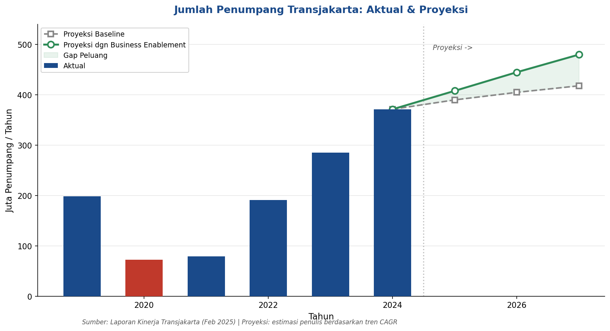
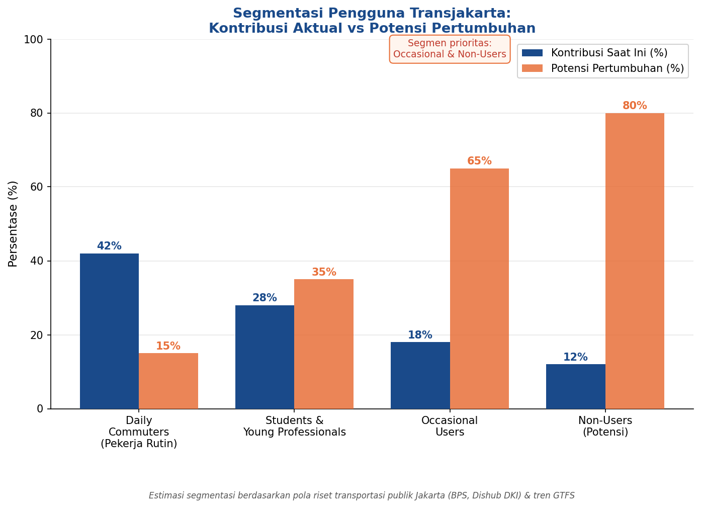
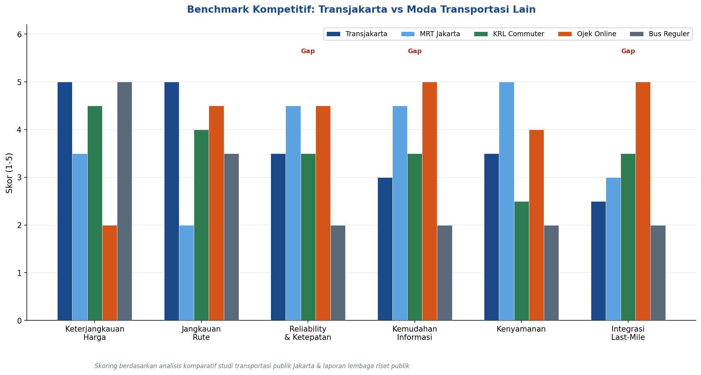
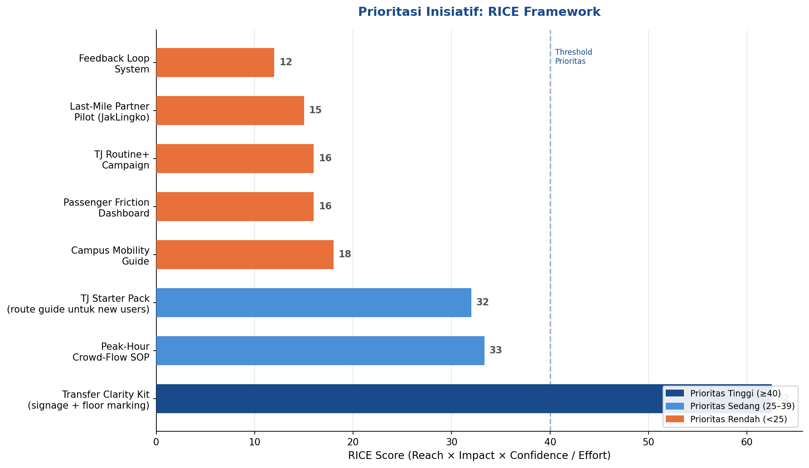
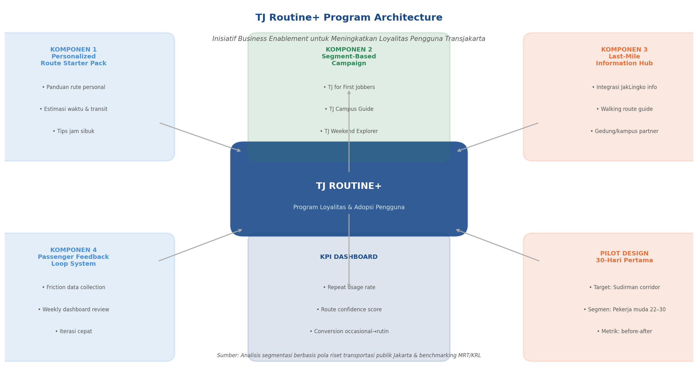
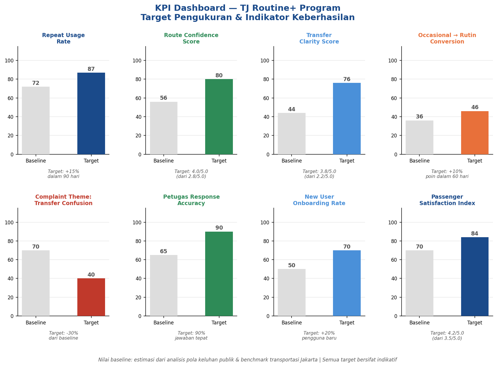

Keterbatasan Analisis
Limitations
Outside-In Strategic Analysis
Analisis ini tidak menggunakan data internal Transjakarta seperti data CRM, repeat usage rate aktual, atau survei kepuasan yang representatif. Segmentasi pengguna dikembangkan berdasarkan pola riset transportasi publik yang tersedia secara publik (BPS, Dishub DKI) dan tidak mewakili data segmentasi resmi Transjakarta. Semua proyeksi dan target KPI bersifat indikatif.
Problem Statement
Peluang yang Belum Dimaksimalkan
Berdasarkan Laporan Kinerja Transjakarta (Feb 2025), jumlah penumpang mencapai 371,4 juta di 2024, naik dari 285 juta di 2023. Pertumbuhan ridership tidak hanya bergantung pada penambahan armada dan rute, melainkan pada kemampuan mengkonversi pengguna sesekali menjadi pengguna rutin. Analisis ini merupakan proposal awal berbasis desk research untuk mengidentifikasi peluang strategis di area tersebut.

Gap antara proyeksi baseline dan proyeksi dengan strategi adopsi yang aktif | Proyeksi indikatif berbasis tren CAGR historis
Directional Insights
Sinyal dari Desk-Based Validation
Pola yang konsisten dari ulasan publik dan simulasi perjalanan digital, digunakan sebagai sinyal arah, bukan data representatif:
| Temuan | Implikasi Strategis |
|---|---|
| Pengguna bingung saat transit, konsisten di ulasan halte interchange utama | Butuh route confidence tools dan transfer clarity |
| Ojek online dipilih karena lebih "pasti", perceived reliability lebih tinggi | TJ perlu meningkatkan predictability layanan |
| Mahasiswa dan pekerja muda sensitif harga, TJ sudah unggul di dimensi ini | Peluang campaign yang segment-specific |
| Pengguna sesekali tidak tahu rute terbaik, barrier utama adopsi rutin | Butuh route starter guide untuk pengguna baru |
| Rata-rata 2-3 keputusan per perjalanan transit dalam simulasi digital | Kompleksitas navigasi adalah hambatan utama |
Catatan Metodologi
Temuan di atas bersifat directional, bukan representasi statistik penuh. Semua insight dapat diperkuat dengan penelitian primer dan data internal Transjakarta di tahap berikutnya.
Segmentasi Pengguna
Siapa Pengguna Transjakarta?
Segmentasi dikembangkan berdasarkan pola riset transportasi publik Jakarta yang tersedia secara publik (BPS, Dishub DKI), bukan data segmentasi internal Transjakarta.

Daily Commuters adalah kontributor terbesar saat ini · Pengguna Sesekali dan Non-Pengguna menyimpan potensi konversi tertinggi
Daily Commuters
- Pekerja kantoran rutin
- Sensitif waktu dan reliability
- Pain point: kepadatan jam sibuk
- Strategi: pertahankan loyalitas
Mahasiswa dan Young Professionals
- Digital-savvy, sensitif harga
- Terbuka terhadap campaign baru
- Pain point: bingung rute dan transfer
- Strategi: bangun kebiasaan sejak awal
Pengguna Sesekali dan Non-Pengguna
- Punya opsi ojek, motor, atau mobil
- Belum jadikan TJ pilihan utama
- Pain point: bingung rute, persepsi lama
- Strategi: konversi ke pengguna rutin
Analisis Kompetitif
Posisi Transjakarta vs Moda Lain
Benchmark di 6 dimensi layanan untuk mengidentifikasi keunggulan unik Transjakarta dan gap yang perlu ditutup.

Transjakarta unggul di harga dan jangkauan rute · Gap kritis ada di kemudahan informasi dan integrasi last-mile
Insight Strategis
Transjakarta tidak perlu mengalahkan ojek online di convenience. Strategi lebih efektif: perkuat keunggulan unik (harga dan jangkauan) sambil tutup gap kritis di informasi rute dan koneksi last-mile, yang menjadi hambatan utama adopsi pengguna baru.
Prioritasi Inisiatif
RICE Framework Scoring
8 inisiatif diprioritasi menggunakan RICE (Reach x Impact x Confidence / Effort) untuk membandingkan potensi dampak relatif terhadap resource yang dibutuhkan.

Transfer Clarity Kit dan TJ Starter Pack mendapat skor tertinggi: high impact, high confidence, low effort
Mini-Method: RICE Scoring
Reach — estimasi jumlah tipe pengguna yang terdampak (skala 1-5). Impact — estimasi dampak terhadap adopsi atau pengurangan friction (skala 1-5). Confidence — tingkat keyakinan bahwa inisiatif akan berhasil berdasarkan desk research (skala 1-5). Effort — estimasi kompleksitas implementasi dalam resource dan waktu (skala 1-5). Formula: (R × I × C) / E. Semua nilai adalah estimasi kualitatif, bukan angka dari data internal Transjakarta.
Proposal Pilot Program
TJ Routine+: Strategi Peningkatan Adopsi Pengguna
Status: Proposal Pilot Indikatif
TJ Routine+ adalah proposal pilot berbasis desk research, bukan rekomendasi implementasi final. Desain ini dikembangkan untuk menunjukkan structured thinking dalam merancang program. Validasi lapangan, uji coba terbatas, dan penelitian primer bersama pengguna nyata diperlukan sebelum implementasi skala penuh.
Program ini dirancang untuk mengkonversi pengguna sesekali menjadi pengguna rutin melalui empat komponen yang saling mendukung.

4 komponen terintegrasi: panduan rute personal, campaign berbasis segmen, hub informasi last-mile, dan sistem feedback loop
Pilot Design: TJ Routine+ for First Jobbers
Target Segmen
Pekerja muda 22-30 tahun di koridor Sudirman-Thamrin-Kuningan-Blok M
Durasi Pilot
30 hari pertama dengan evaluasi mingguan dan iterasi cepat berbasis feedback
Intervensi Utama
Route starter pack + peak-hour transfer guide + office-area campaign + feedback QR di halte
Success Metrics
Repeat usage intention, route confidence score, reduksi keluhan "bingung rute"
Measurement Framework
KPI Dashboard
8 KPI utama program yang mencakup dimensi adoption, experience quality, dan efisiensi operasional. Semua nilai baseline dan target bersifat estimasi indikatif.

Nilai baseline adalah estimasi dari analisis pola keluhan publik dan benchmark transportasi Jakarta · Bukan data internal TJ
Prinsip Pengukuran
Program ini berfokus pada leading indicators: kepercayaan pengguna terhadap rute, frekuensi kunjungan, dan reduksi friction dalam pengalaman pertama. Ini adalah fondasi loyalitas jangka panjang, bukan sekadar angka ridership sesaat.
Penutup
Dari Analisis ke Aksi
Kedua studi kasus ini dibangun dengan satu keyakinan: transportasi publik yang baik bukan sekadar soal infrastruktur, tapi soal ekosistem. Informasi yang jelas, pengalaman yang predictable, dan layanan yang berpihak pada pengguna adalah fondasi dari ekosistem itu.
Transjakarta telah membangun fondasi yang sangat kuat. Strategi peningkatan adopsi dan loyalitas pengguna adalah lapisan berikutnya yang akan mengunci pertumbuhan yang berkelanjutan. Sebagai calon Management Trainee, saya ingin berkontribusi pada lapisan itu dari dalam, dengan kemampuan analytical thinking, koordinasi lintas fungsi, dan semangat belajar yang tinggi.